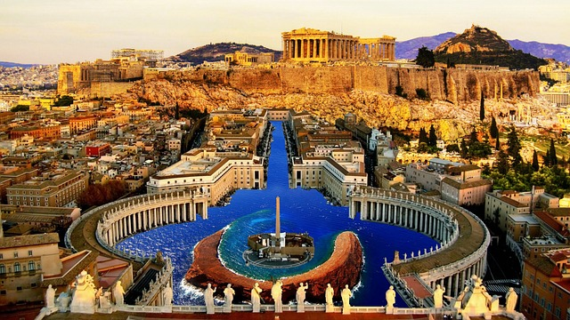
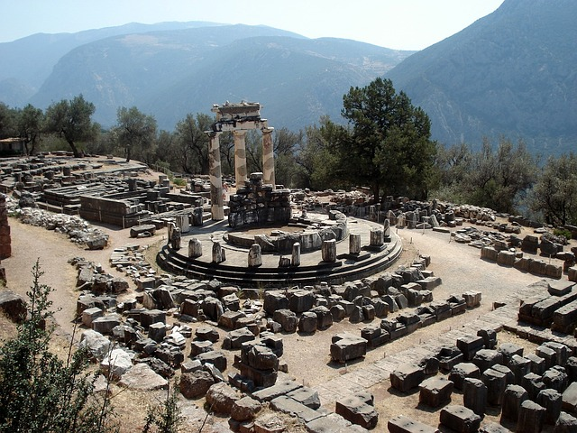
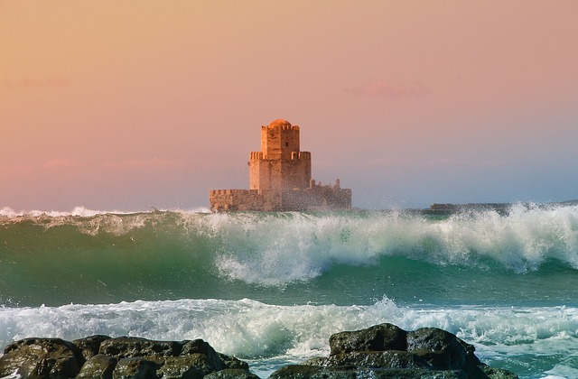

Greece - Cultural Enthusiast Itinerary
Day 1-3: Athens

- Explore the Acropolis and its archaeological sites, including the Parthenon, Temple of Olympian Zeus, and Ancient Agora.
- Visit the National Archaeological Museum to see treasures from ancient Greece, including the Mask of Agamemnon.
- Attend a performance at the Odeon of Herodes Atticus, an ancient theatre beneath the Acropolis, showcasing Greek tragedies and concerts.
Day 4-6: Delphi and Meteora

- Take a day trip to Delphi, known as the centre of the ancient world, and visit the archaeological site and museum.
- Explore the monasteries of Meteora, perched atop towering rock formations, and learn about their history and religious significance.
- Hike the trails of Meteora to discover hidden caves, hermitages, and panoramic viewpoints overlooking the Thessalian plain.
Day 7-10: Peloponnese

- Visit the ancient sites of Mycenae, Epidaurus, and Olympia, UNESCO World Heritage Sites, known for their historical and cultural importance.
- Explore the medieval castles of Nafplio, Monemvasia, and Mystras, remnants of the Byzantine and Venetian eras.
- Enjoy wine tasting tours in the Nemea and Mani regions, sampling local varieties such as Agiorgitiko and Moschofilero.